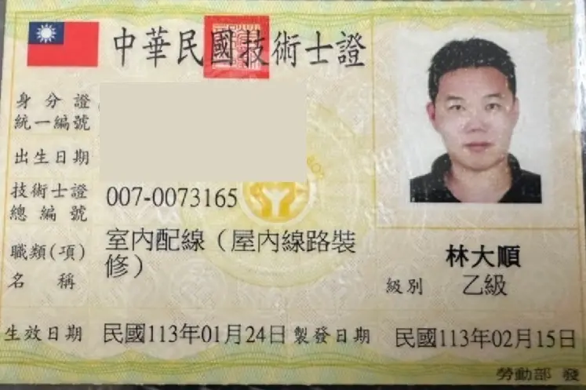
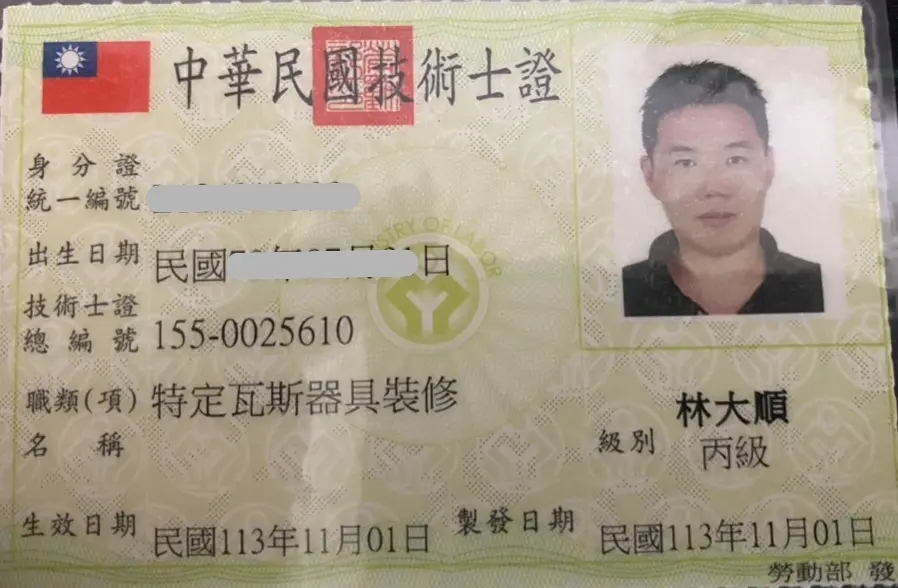
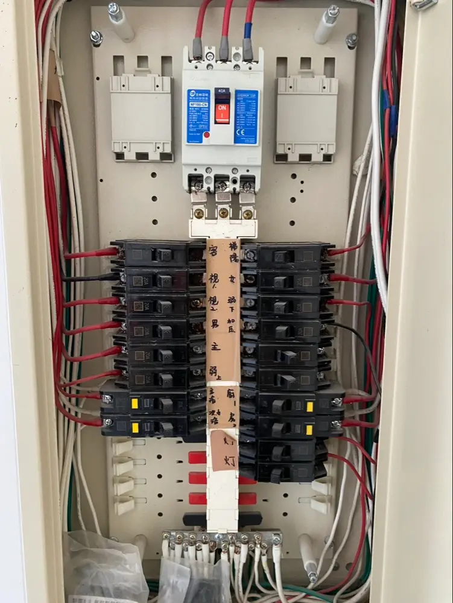
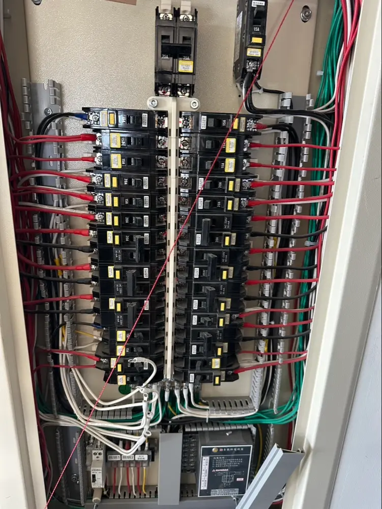
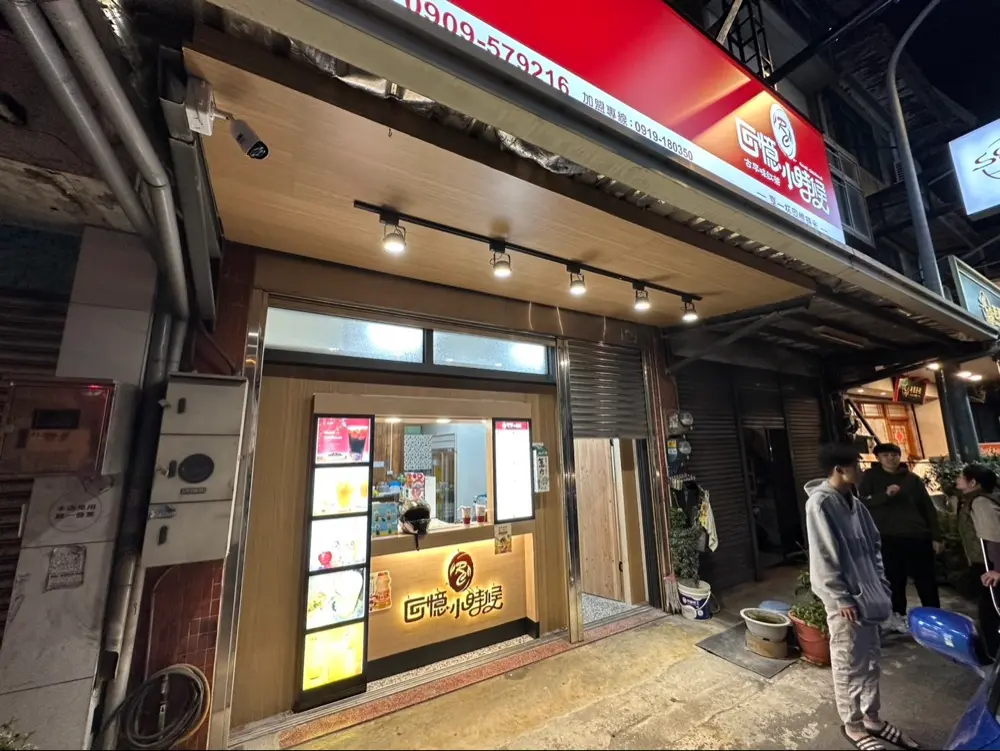
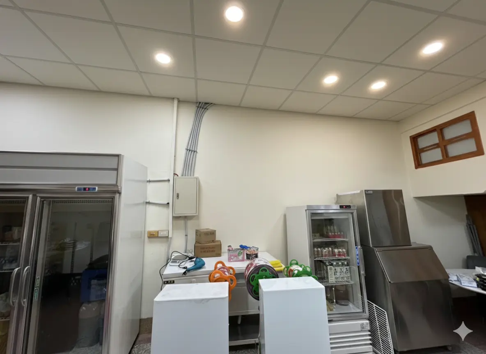
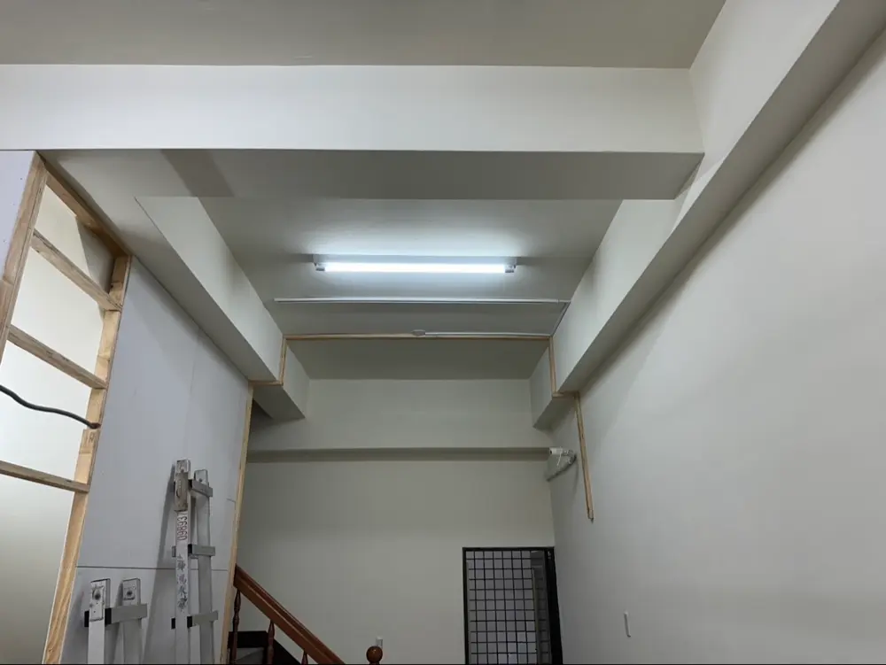
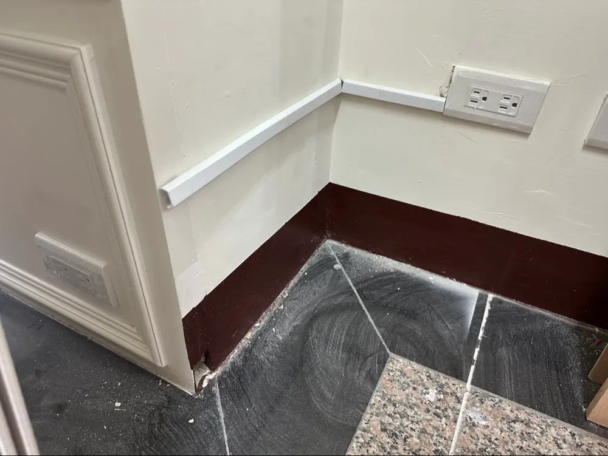
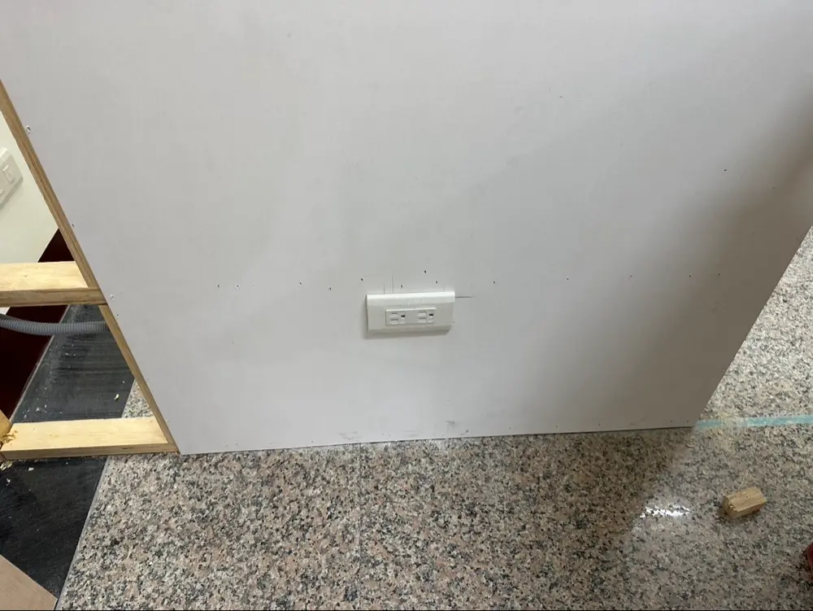

台中水電維修 · 弱電工程 · 監視系統架設 · 熱水器更換
台中 水電推薦
24小時 急修 & 弱電監視系統首選
由國家認證乙級技術士親自服務。拒絕漫天喊價，堅持施工品質。
主力服務區：大雅、神岡、潭子、北屯、西屯、南屯、豐原、南區
📜 台中水電行推薦｜國家級專業認證技術士
專業證照持證施工，居家水電安全、弱電監視器裝修有保障

室內配線 (乙級證照)
用電設備檢驗 (丙級)

特定瓦斯器具裝修
自來水管配管 (丙級)
⚡ 台中弱電工程與水電整合專家
從強電配電箱、專業插座增設，到弱電網路線路、遠端監視器安裝，提供一站式整合服務

高規格主配電與插座增設規劃
工業級整線標準，符合安全規範，解決跳電隱患

台中監視器安裝與弱電佈線
居家安全監控、辦公室網路機櫃整理、弱電訊號線路查修與設定
💡 台中水電施工與空間配置實績

連鎖餐飲店面水電
招牌燈光與戶外電力配置

商業廚房電力規劃
高功率設備專用迴路配置

公共區域感應照明
樓梯間自動感應燈具安裝

明線壓條美化
轉角處細緻收邊，不破壞裝潢

居家插座增設
使用合格耐燃材質，安全第一
室內間接照明
柔和光源配置
台中水電與弱電監視器透明報價，安心修繕
我們承諾：施工前必先現場評估與報價，您點頭同意後才動工，絕不事後加價。
| 常見服務項目 | 參考價格 | 服務說明 |
|---|---|---|
| 大雅/台中 24小時 緊急救援 (水電急修) | 500元 - 2,500元 | 基本出勤費 500元；夜間(18:00-08:00)或假日時段依複雜度現場報價 |
| 熱水器更換 / 故障檢修 | 1,500元 - 3,500元 起 | 各式瓦斯熱水器、電熱水器安全安裝與特定瓦斯器具線路調整 |
| 插座增設 / 開關面板更換 | 800元 - 1,500元 / 個 | 含面板合格耐燃材料與水電師傅安裝工資 |
| 水管通管與漏水維修 | 2,500元 起 | 依堵塞深度或漏水嚴重程度現場精準評估報價 |
| 弱電工程 / 監視器安裝 | 2,500元 - 2,800元 起 | 網路資訊插座 2,500元/口；專業監視系統佈線與遠端設定 2,800元/點 |
| 全屋電線抽換 (老屋翻修) | 2,500元 - 3,500元 / 坪 | 全面採用符合國家檢驗合格之優質安全耐燃線材 |
* 以上價格為部分常見項目參考行情，最終報價以現場評估實際狀況為準。
📋 點此查看「完整詳細水電工程報價表」💡 台中在地廣禹工程的 5 大安心承諾
- ✓ 絕不亂加價： 現場評估透明報價，經客戶同意才施工。
- ✓ 環境整潔： 完工後主動簡易清潔，不留垃圾給您。
- ✓ 合格材料： 堅持使用檢驗合格之水電、弱電與監視器線材零件。
- ✓ 售後保固： 責任施工，專業維修有保障，售後絕不推託。
- ✓ 24小時 在線待命： 您的緊急跳電、爆水管狀況，就是我們的優先任務。
🤔 台中水電常見問題 Q&A
Q：半夜跳電或漏水，真的可以打電話嗎？台中水電急修通常多久能到？
A：是的！廣禹工程提供 台中 24小時 緊急救援服務。無論是凌晨 3 點跳電還是假日爆水管，遇到緊急狀況請直撥 0981-989-600，我們主要服務大雅、西屯、北屯、南區，最快 30 分鐘內迅速到府維修。
Q：請問有提供熱水器更換或維修服務嗎？
A：有的，廣禹工程專精各式瓦斯與電熱水器更換及檢修。我們持有特定瓦斯器具裝修及國家級專業證照，從水路到安全電路全面嚴格把關，用起來最安心。
Q：維修的費用大概多少？會亂喊價嗎？
A：我們堅持透明報價。基本出勤費 500元 起（視時段與距離調整），現場檢測後會先報價，您同意後才動工施工，絕不坐地起價。常見項目如插座更換、熱水器檢修、網路佈線或專業監視器安裝，皆有公開透明的行情供您參考。
Q：大雅以外的區域有服務嗎？弱電與監視器安裝也有接嗎？
A：有的！雖然我們位於大雅區，但台中市全區皆有服務！ 包含西屯、北屯、南區、神岡、潭子、豐原、南屯等。無論是居家緊急水電維修，還是住家、廠辦的弱電佈線與監視系統架設，一通電話全區服務。